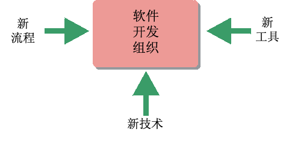

| 可配置流程 |
 |
|
主要描述
 Rational Unified Process 提供一个可以针对每个软件开发组织的特定需要进行定制的框架。影响定制效果的因素包括使用什么技术、采用哪些工具以及组织中当前使用哪些流程。 Rational Unified Process（RUP）是充分通用和完整的，可以由多种软件开发组织使用。在许多环境中，此软件工程流程都将需要修改、调整、扩展和定制，以适应采用该流程的组织的具体特征、约束和历史记录。 环境规程描述您将怎样在您的项目中着手定制和实施新的软件开发流程。这种定制的结果是在特定于项目的流程中反映出来的。关于详细信息，请参阅概念：RUP 定制。 您可以扩展 RUP Web 站点来合并开发组织的流程“专业知识”或合并一组可重用资产。有关更多信息，请参阅 Rational Method Composer。 |
© Copyright IBM Corp. 1987, 2006. All Rights Reserved. |